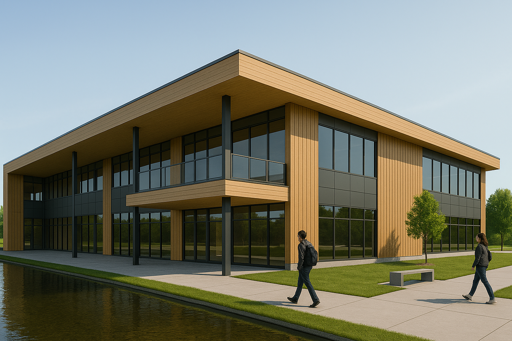

Naawi-Oodena

Historical info
Naawi-Oodena
Origins and Significance
- Treaty One: This treaty was signed on August 3, 1871, at Lower Fort Garry. It was the first numbered treaty in Canada. It was made between the Anishinaabe and Swampy Cree peoples and the Canadian government (the Crown).
- Land Promises: The treaty said each family of five people would get 160 acres of land. In return, the First Nations gave up a large part of southern Manitoba to the Crown.
Kapyong Barracks Site
- Military Use: The land that is now called Naawi-Oodena used to belong to the Canadian army. It was used by a group called Princess Patricia's Canadian Light Infantry until the year 2004.
- Legal Challenges: After the army left the land, the Canadian government tried to sell it. They did not talk to the Treaty One First Nations about it, which caused legal problems.
- Court Rulings: In 2009, a judge from Federal Court stopped the government from selling the land because they did not talk to the First Nations. The government tried to appeal (fight the decision), but they lost. In 2015, they stopped all legal action.
Repatriation and Development
- Land Transfer: On August 30, 2019, a final agreement was signed. The land was given to the seven Treaty One First Nations.
- Official Repatriation: On December 16, 2022, the land officially became reserve land. This made it the biggest urban reserve in Canada.
- Municipal Agreement: On July 20, 2022, Treaty One First Nations and the City of Winnipeg signed a deal called the Gaawijijigemangit Agreement. It is a Municipal Development & Services Agreement. It makes sure the city will provide services to Naawi-Oodena. The word "Gaawijijigemangit" means "Working Together in Partnership" in the Ojibway language.
Cultural Recognition
- Naming Ceremony: The name "Naawi-Oodena" was given during a special ceremony. It was led by the late Dr. Dave Courchene Jr., a respected Knowledge Keeper from Sagkeeng First Nation.
- City Honors: At the signing of the Gaawijijigemangit Agreement, the City of Winnipeg gave the "Keys to the City" to the Chiefs of the seven Treaty One First Nations. This was to honor their leadership and the importance of Naawi-Oodena.
Future Outlook
- Economic Potential: Naawi-Oodena is expected to become a major project that will bring a lot of investment, help Winnipeg grow, and become a good example for other urban reserves in Canada.